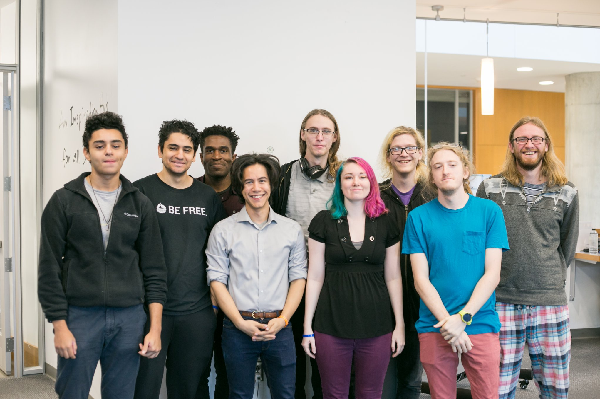
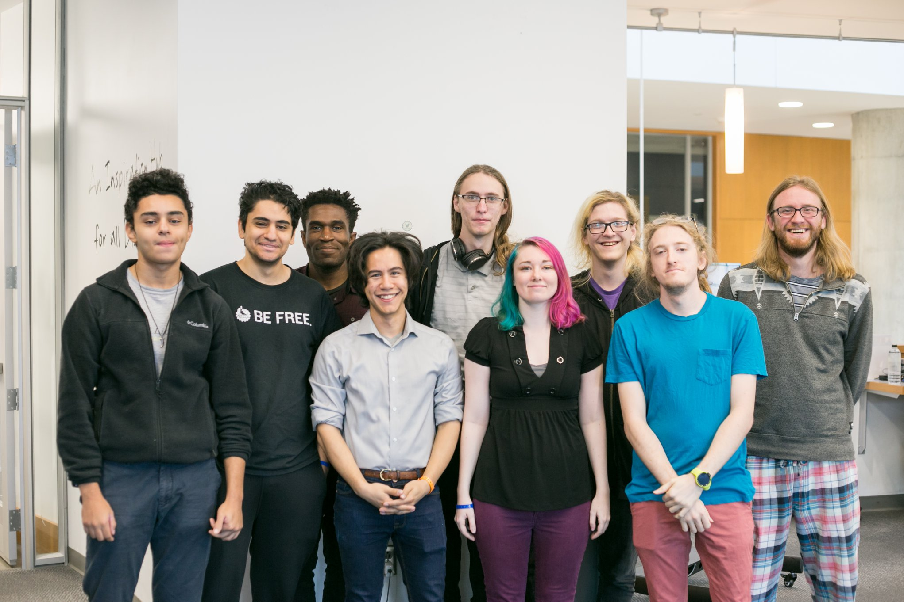

Taskful functions just like many to-do lists. All you have to do is enter in your to-do list as a series of tasks. When you begin working on a task, press the start button. When you finish a work session, press the stop button, and you will given a series of prompts regarding your productivity and work environment. This data is sent through machine learning algorithms, and visualized so that you can see what work environments help you be the most productive.
DevPost


As a group, we conducted an experiment to measure how much signal interference is caused wood, concrete, and paper to a mobile robot.
A game that you hit blocks while avoiding projectiles. Unfortuntely Unity's web plugin is deprecated and I'm unable to present this at the moment.